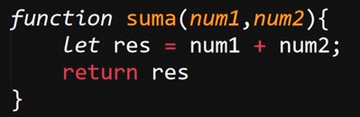
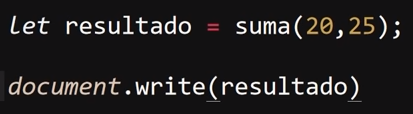
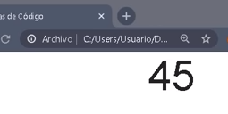

En una función es posible el enviarle uno o más datos en particular para que esta los pueda emplear en su proceso, para hacerlo se emplean los paréntesis que forman parte de la estructura de las funciones, dentro de estos se definirá una variable local de la función por cada dato que esta necesite para operar.
De este modo al realizar el llamado de la función se ingresará los datos dentro de los paréntesis que acompañan al nombre de esta, los cuales serán almacenados por las variables declaradas en la formulación de la función de esta forma:
Ejemplo

En este ejemplo se puede apreciar el cómo los paréntesis de la estructura de una función se definen dos variables "num1" y "num2" las cuales recibirán los datos proveídos para la ejecución de la función, a la vez que estas variables son operadas por el código dentro de esta.
Ejecución

Resultado

En este segundo ejemplo se llama la función "suma" a la vez que se asigna a una variable llamada "resultado" para poder guardar los datos retornados por esta, se puede apreciar el cómo al realizar el llamado de la función se envían dos datos dentro de los paréntesis de esta (20 y 25), los cuales serán recibidos por las variables de la imagen anterior y operados por la función, de ese modo resultando en el valor 45 el cual es retornado hasta la variable "resultado".
De este modo una función puede ser utilizada cada vez que sea necesario ya que en cada caso con enviar los datos pertinentes se obtendrá un resultado en base a estos.
Nota: En el caso de que la función no requiera de ningún parámetro simplemente se incorporan los paréntesis a la estructura de function dejándolos vacíos, ya que estos forman parte de la sintaxis de estas.
Nota: Las funciones tienen un alcance Global, eso quiere decir que están disponibles para utilizarse en todo el documento JS, por otro lado las variables definidas dentro de estas solo deben tener un alcance regional, esto es lo mejor para evitar cualquier tipo de conflicto o error en el sistema. Por ello es importante definir las variables como "let", ya que de no especificarse JavaScript por defecto definirá las variables como "var" lo que les dará un alcance global generando dichos conflictos.